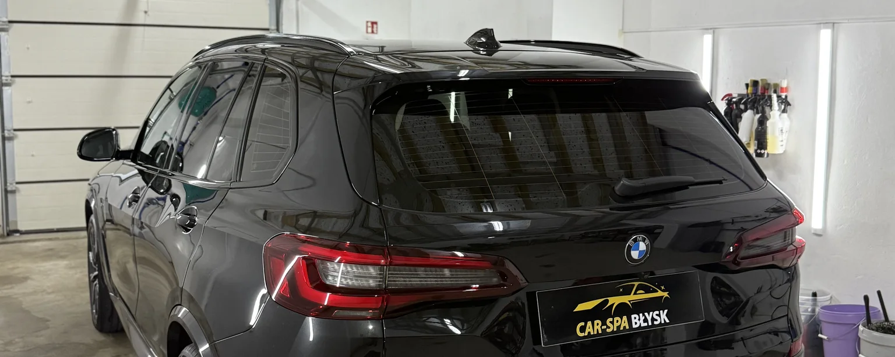
Usługi
Nadwozie i lakier
Sześć usług-
01 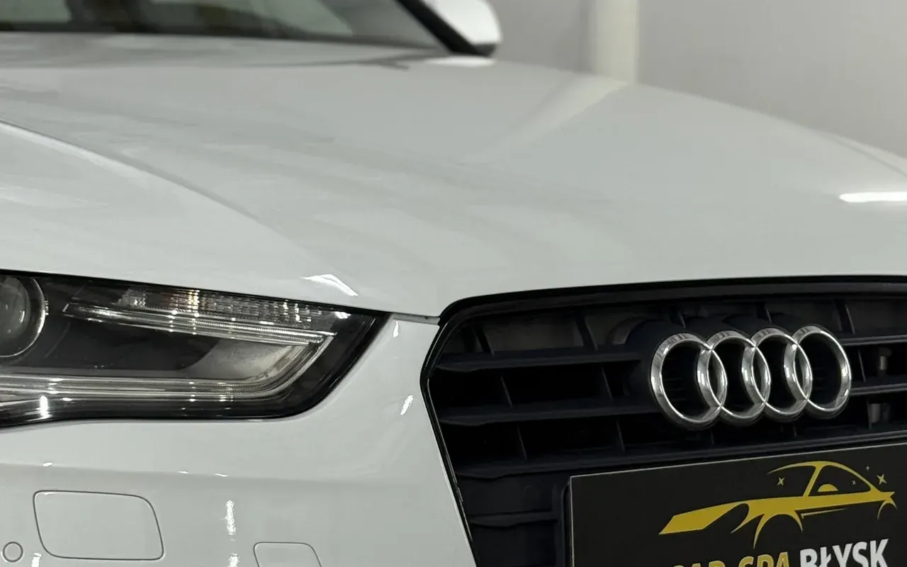
Mycie zewnętrzne
od 150 zł
Mycie ręczne, bez szczotek. Wnęki drzwiowe i bagażnik robione są osobno, tak samo nadkola i felgi.
- Mycie wnęk drzwiowych i bagażnika
- Mycie lakieru metodą dwóch wiader
- Mycie nadkoli i felg
- Mycie szyb
-
02 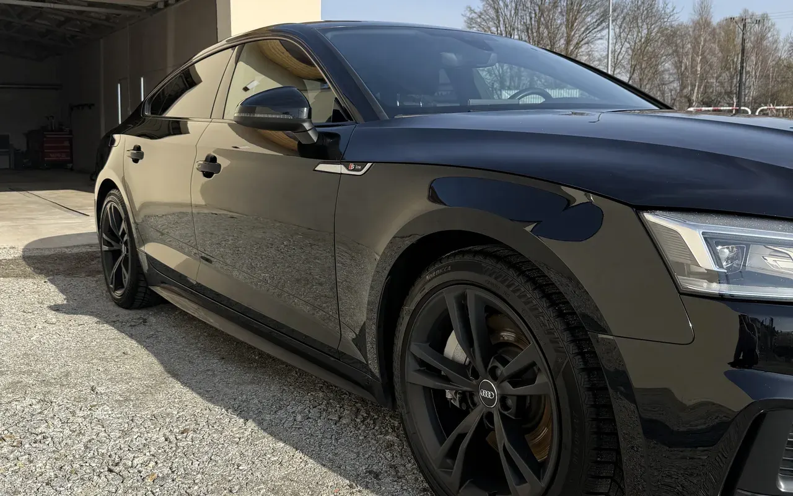
Mycie zewnętrzne z dekontaminacją
od 250 zł
To samo mycie co za 150 zł, a do tego zdjęcie zanieczyszczeń, które wbiły się w lakier i nie schodzą szamponem.
- Wszystko z mycia za 150 zł
- Usuwanie lotnej rdzy z lakieru
- Usuwanie smoły z lakieru
- Usuwanie śladów po twardej wodzie
-
03 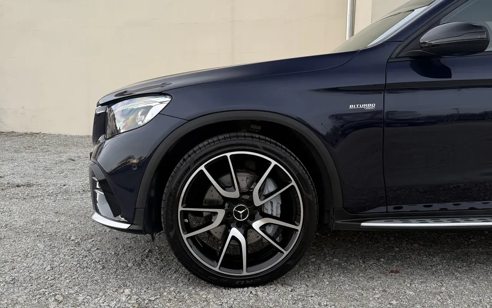
Odświeżenie lakieru
od 500 zł
Polerowanie maszynowe, które zdejmuje oksydację i nabłyszcza lakier. Krok przed pełną korektą, dla aut bez głębokich rys.
- Polerowanie maszynowe całego nadwozia
- Usunięcie oksydacji lakieru
- Nabłyszczenie
-
04 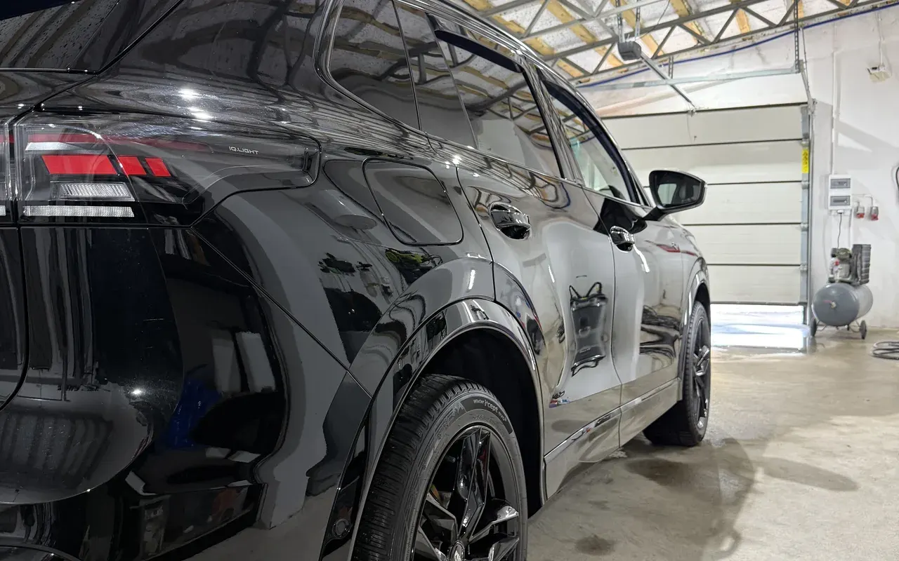
Polerowanie jednoetapowe
od 800 zł
Korekta w jednym etapie. Zdejmuje od 50 do 80 procent rys, zależnie od stanu lakieru i tego, jak głęboko sięgają.
- Ocena lakieru przed pracą
- Jeden etap korekty maszynowej
- Usunięcie 50–80% rys
- Zabezpieczenie lakieru po polerowaniu
-
05 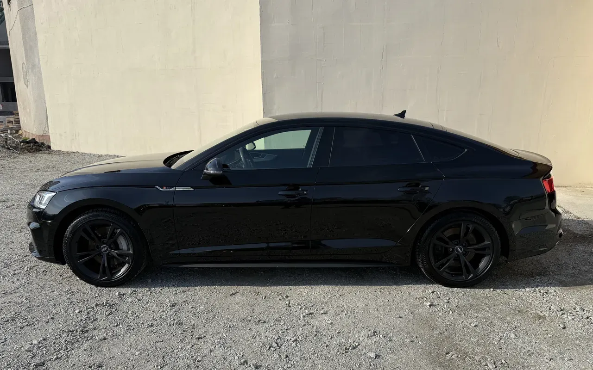
Polerowanie dwuetapowe
od 1500 zł
Etap tnący zbiera głębsze rysy, wykańczający usuwa ślady po pierwszym. Zdejmuje od 80 do 95 procent rys.
- Etap tnący
- Etap wykańczający
- Usunięcie 80–95% rys
- Zabezpieczenie lakieru po korekcie
-
06 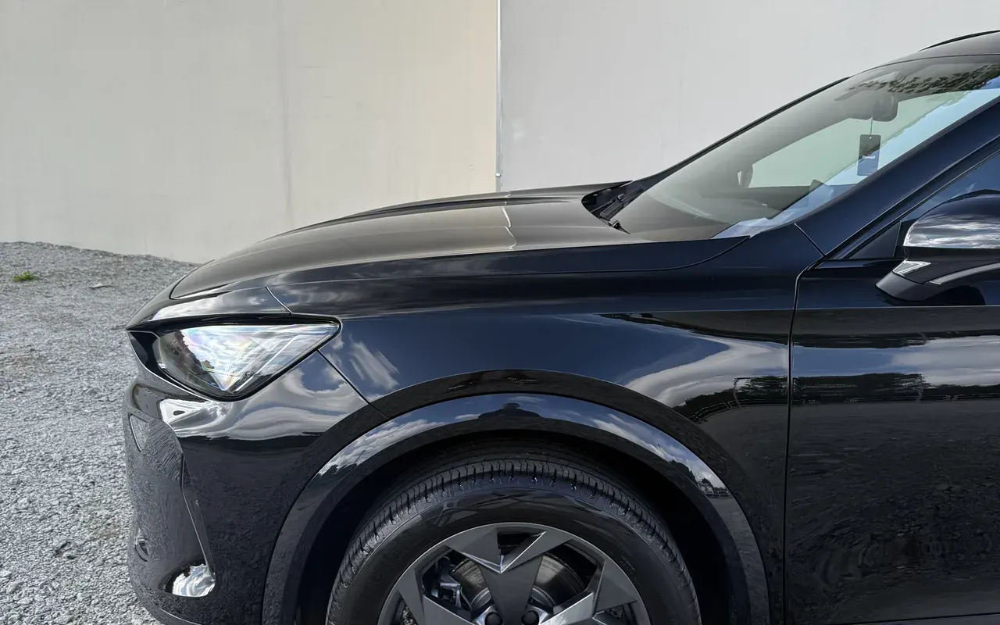
Twardy wosk
od 200 zł
Zabezpieczenie lakieru nakładane po umyciu i osuszeniu auta. Tańsze i szybsze od powłoki ceramicznej, ale trzeba je odnawiać co kilka miesięcy.
- Mycie i osuszenie przed nałożeniem
- Nałożenie wosku na całe nadwozie
- Wypolerowanie mikrofibrą
Powłoki ceramiczne
Cztery usługi-
07 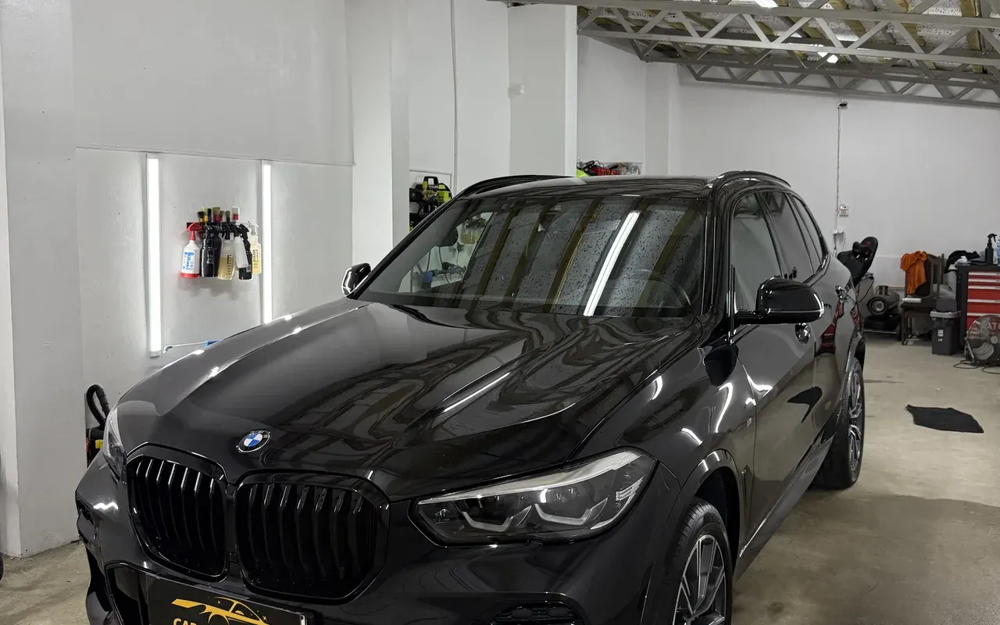
Powłoka ceramiczna roczna
od 500 zł
Warstwa krzemionkowa na przygotowanym lakierze. Woda spływa razem z brudem, więc kolejne mycia zajmują mniej czasu.
- Przygotowanie lakieru przed aplikacją
- Odtłuszczenie powierzchni
- Aplikacja powłoki i zebranie nadmiaru
- Utwardzanie w hali
-
08 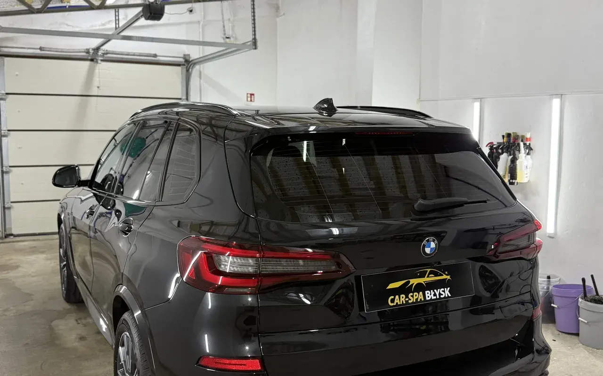
Powłoka ceramiczna trzyletnia
od 900 zł
Ta sama robota przygotowawcza co przy powłoce rocznej, ale grubsza warstwa i dłuższe utwardzanie. Auto zostaje w hali na dłużej.
- Pełne przygotowanie lakieru
- Grubsza warstwa powłoki
- Dłuższe utwardzanie w hali
-
09 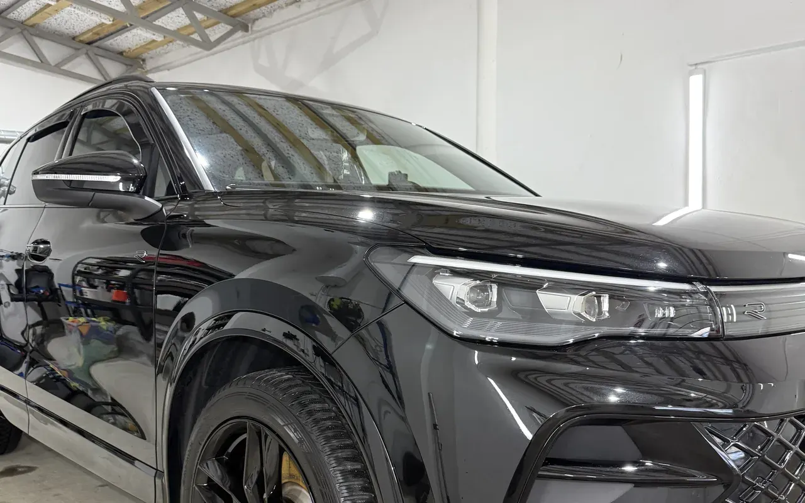
Powłoka ceramiczna na szyby
od 200 zł
Powłoka nakładana na szyby. Przy prędkości woda spływa sama, więc wycieraczki mają mniej pracy, a widoczność w deszczu jest lepsza.
- Oczyszczenie szyb przed aplikacją
- Aplikacja powłoki
- Można łączyć z powłoką na lakier
-
10 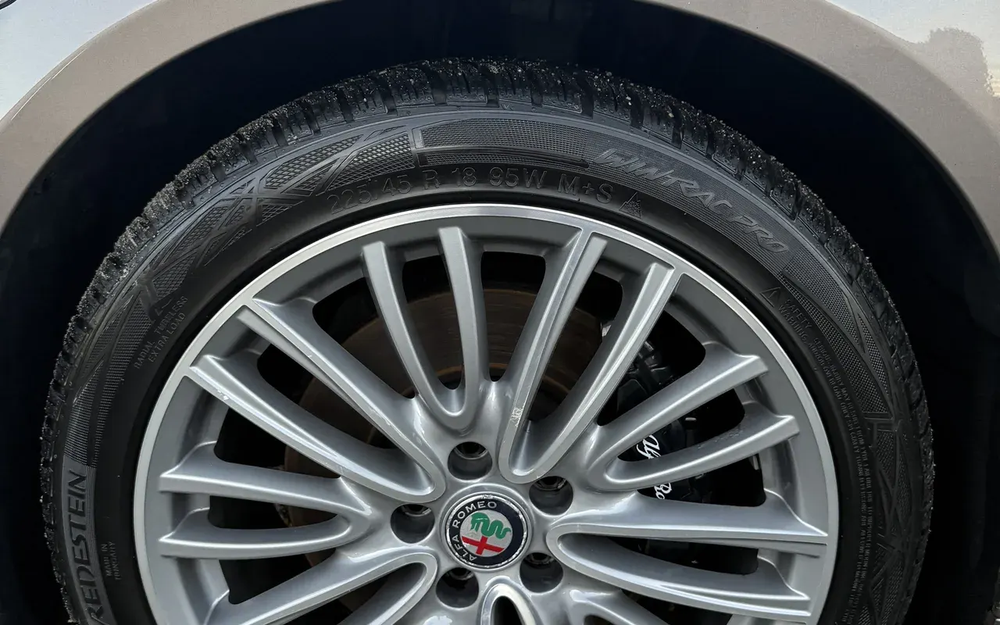
Powłoka ceramiczna na fronty felg
od 100 zł
Powłoka na widoczną część felgi. Pył z klocków trudniej się przykleja, więc felgi łatwiej domyć przy zwykłym myciu.
- Dokładne umycie felg przed aplikacją
- Aplikacja na fronty
- Można łączyć z powłoką na lakier
Wnętrze
Dwie usługi-
11 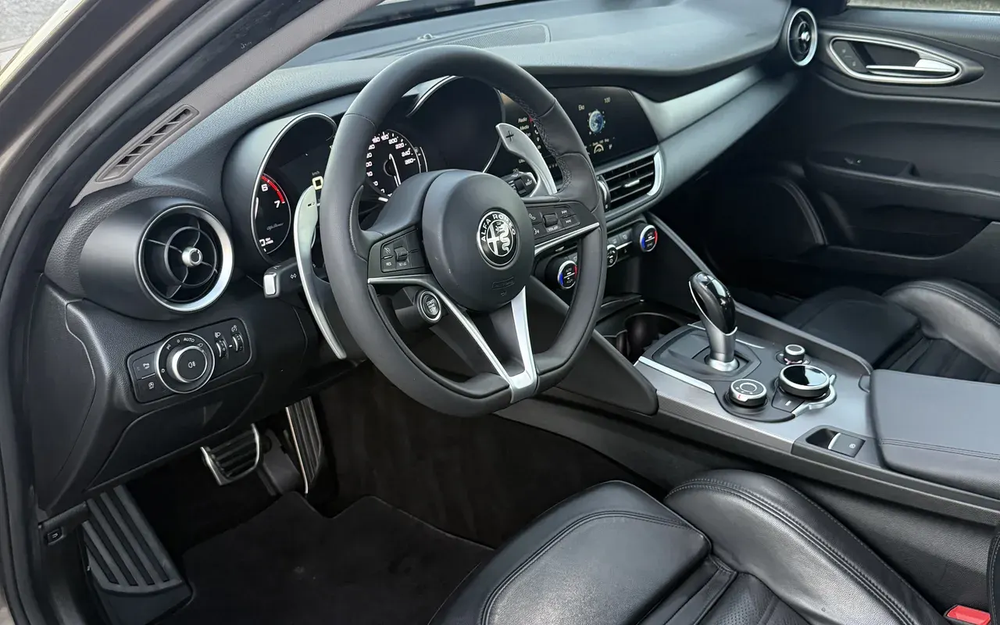
Czyszczenie wnętrza
od 400 zł
Bez wyciągania foteli i bez prania ekstrakcyjnego wykładziny. Najwięcej czasu zajmują szczeliny i nawiewy.
- Czyszczenie foteli skórzanych albo pranie tapicerki
- Czyszczenie plastików
- Dokładne odkurzanie
- Mycie szyb od środka
-
12 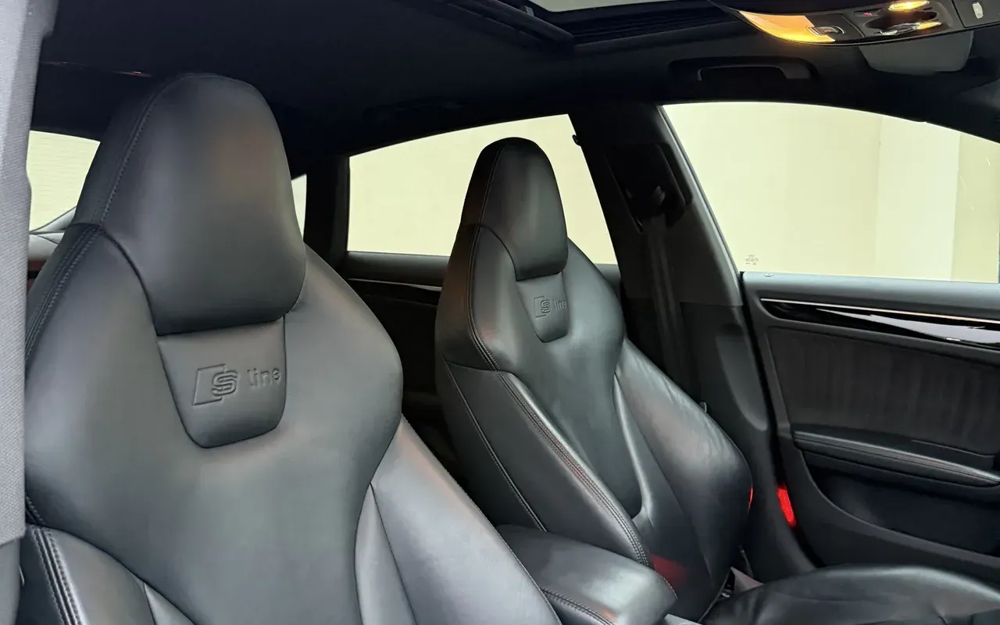
Czyszczenie wnętrza z demontażem foteli
od 600 zł
Wyjęte fotele odsłaniają wykładzinę i miejsca, do których inaczej nie da się dojść. Do tego schodzi podsufitka.
- Wszystko z czyszczenia za 400 zł
- Demontaż i montaż foteli
- Pranie ekstrakcyjne wykładziny
- Czyszczenie podsufitki
Lampy i dach
Dwie usługi-
13 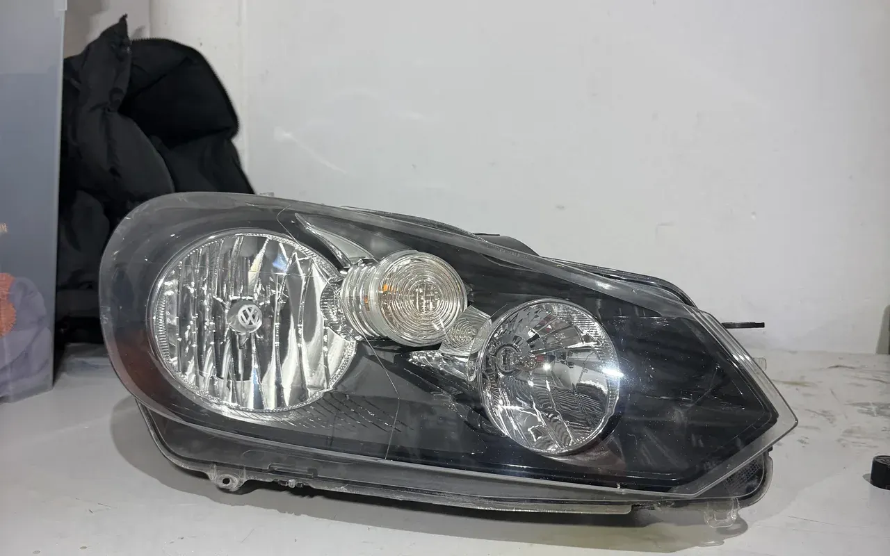
Renowacja lamp
od 300 zł
Zmatowiały klosz wraca do przejrzystości. Na koniec dostaje powłokę ceramiczną, bo bez niej matowieje ponownie po kilku miesiącach.
- Szlifowanie kloszy papierami ściernymi
- Polerowanie po szlifowaniu
- Zabezpieczenie roczną powłoką ceramiczną
-
14 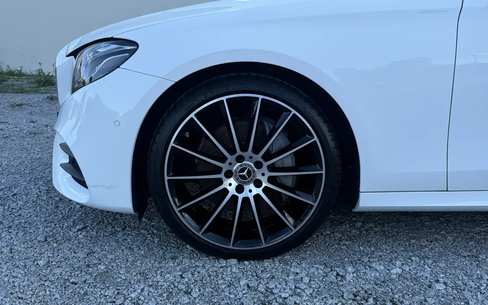
Impregnacja dachu cabrio
od 300 zł
Czyszczenie materiałowego dachu i impregnacja, po której woda przestaje wsiąkać w tkaninę i spływa po powierzchni.
- Czyszczenie tkaniny środkiem do dachów
- Suszenie przed impregnacją
- Nałożenie impregnatu
Nie wiesz, co wybrać?
Powiedz, czym jeździsz i co Cię w aucie denerwuje. Zakres dobiorę przez telefon, a widełki z cennika domykam po obejrzeniu auta.